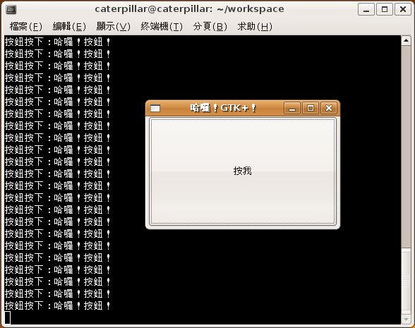

您可以自訂callback函式，使用g_signa_connect()函式連接，在指定的Signal發生時呼叫自訂的callback函式，自訂的callback函式原型基本上是以下的形式：
void func_name(GtkWidget *widget, ..., gpointer user_data);
第一個參數是發出信號的Widget指標，第二個參數是呼叫callback函式時，所要傳遞給callback函式的相關資料，舉個實際的例子，下面這個範例會有一個按鈕，當按下按鈕時，會在主控台下顯示指定的訊息：
- callback_demo.c
#include <gtk/gtk.h>
// 自訂Callback函式
void button_clicked(GtkWidget *button, gpointer data) {
g_print("按鈕按下：%s\n", (char *) data);
}
int main(int argc, char *argv[]) {
GtkWidget *window;
GtkWidget *button;
gtk_init(&argc, &argv);
window = gtk_window_new(GTK_WINDOW_TOPLEVEL);
gtk_window_set_title(GTK_WINDOW(window), "哈囉！GTK+！");
button = gtk_button_new_with_label("按我");
gtk_container_add(GTK_CONTAINER(window), button);
g_signal_connect(GTK_OBJECT(window), "destroy",
G_CALLBACK(gtk_main_quit), NULL);
g_signal_connect(GTK_OBJECT(button), "clicked",
G_CALLBACK(button_clicked), "哈囉！按鈕！");
gtk_widget_show(window);
gtk_widget_show(button);
gtk_main();
return 0;
}這個範例是以 使用 Signal 關閉視窗 為基礎，增加了一個按鈕，程式中注意的是Callback函式的定義，而要產生一個具有文字的按鈕，可以使用 gtk_button_new_with_label()函式，由於GtkWindow是GtkContainer的子類，所以它可以容納其它的 Widget元件，在這邊使用gtk_container_add()函式將GtkButton加入GtkWindow之中，目前沒有設置任何版面配置， 所以按鈕就填滿整個視窗。
要連接自訂的Callback函式，一樣使用g_signal_connect()，注意到雖然G_CALLBACK巨集會將函式指標轉換為無參數無傳回 值的型態，但這不代表Callback函式不可以傳回值或帶有參數，實際操作時是依當時所連接的函式型態而定，在這邊，g_signal_connect()最後一個參數將傳遞給button_clicked()函式的data參數。
要顯示加入的GtkButton，在這邊再次使用gtk_widget_show()，您也可以直接使用gtk_widget_show_all()，將所有在指定的GtkContainer中的元件都顯示出來：
gtk_widget_show_all(window);
一個執行時的畫面如下所示：

另一個較少使用的Signal連結函式是g_signal_connect_swapped()，它實際上也是個巨集，方便使用g_signal_connect_data()函式，定義如下：
#define g_signal_connect_swapped(instance, detailed_signal, c_handler, data) \
g_signal_connect_data ((instance), (detailed_signal), (c_handler), (data), NULL, G_CONNECT_SWAPPED)
g_signal_connect_data ((instance), (detailed_signal), (c_handler), (data), NULL, G_CONNECT_SWAPPED)
它所對應的Callback函式應如下定義：
void func_name(gpointer user_data, ..., GtkWidget *widget);
簡單的說，就是兩個參數對調，g_signal_connect_swapped()常用來接結僅接受一個單獨Widget作為參數的callback函式，舉個例子來說，像 gtk_widget_destroy() 函式：
void gtk_widget_destroy(GtkWidget *widget);
這個函式會消除指定的Widget，若您在程式中，想要指定消除一個Widget，則可以使用這個函式，舉例來說，若要按下按鈕後，消除GtkWindow，則可以如下：
- callback_demo.c
#include <gtk/gtk.h>
int main(int argc, char *argv[]) {
GtkWidget *window;
GtkWidget *button;
gtk_init(&argc, &argv);
window = gtk_window_new(GTK_WINDOW_TOPLEVEL);
gtk_window_set_title(GTK_WINDOW(window), "哈囉！GTK+！");
button = gtk_button_new_with_label("按我");
gtk_container_add(GTK_CONTAINER(window), button);
g_signal_connect(GTK_OBJECT(window), "destroy",
G_CALLBACK(gtk_main_quit), NULL);
g_signal_connect_swapped(GTK_OBJECT(button), "clicked",
G_CALLBACK(gtk_widget_destroy), window);
gtk_widget_show_all(window);
gtk_main();
return 0;
}這個程式在按下按鈕後，會消去window所儲存的GtkWindow，由於這是唯一個GtkWindow，消除後程式也就跟著結束。您也可以如前一個範例，在自訂的button_clicked()函式中呼叫gtk_widget_destroy()：
- callback_demo.c
#include <gtk/gtk.h>
// 自訂Callback函式
void button_clicked(GtkWidget *button, gpointer data) {
gtk_widget_destroy((GtkWidget*) data);
}
int main(int argc, char *argv[]) {
GtkWidget *window;
GtkWidget *button;
gtk_init(&argc, &argv);
window = gtk_window_new(GTK_WINDOW_TOPLEVEL);
gtk_window_set_title(GTK_WINDOW(window), "哈囉！GTK+！");
button = gtk_button_new_with_label("按我");
gtk_container_add(GTK_CONTAINER(window), button);
g_signal_connect(GTK_OBJECT(window), "destroy",
G_CALLBACK(gtk_main_quit), NULL);
g_signal_connect(GTK_OBJECT(button), "clicked",
G_CALLBACK(button_clicked), NULL);
gtk_widget_show_all(window);
gtk_main();
return 0;
}雖然程式的執行也可以透過按下按鈕消除GtkWindow，但直接使用g_signal_connect_swapped()會是比較直接的方式。
另也還有個g_signal_connect_after()函式值得注意，它實際也是巨集，定義如下：
#define g_signal_connect_after(instance, detailed_signal, c_handler, data) \
g_signal_connect_data ((instance), (detailed_signal), (c_handler), (data), NULL, G_CONNECT_AFTER)
g_signal_connect_data ((instance), (detailed_signal), (c_handler), (data), NULL, G_CONNECT_AFTER)
若您使用g_signal_connect_after()來連接callback函式，則該callback函式，會在所有使用g_signal_connect()設定的callback函式執行之後再執行。